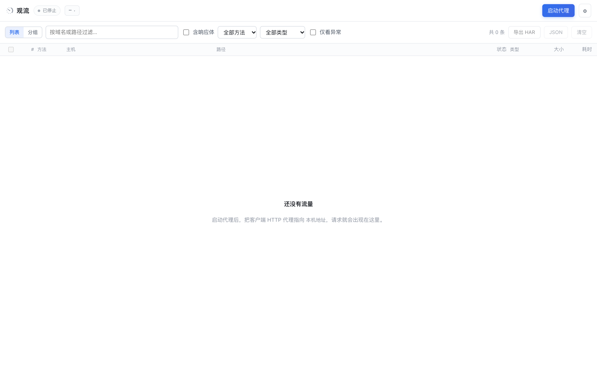
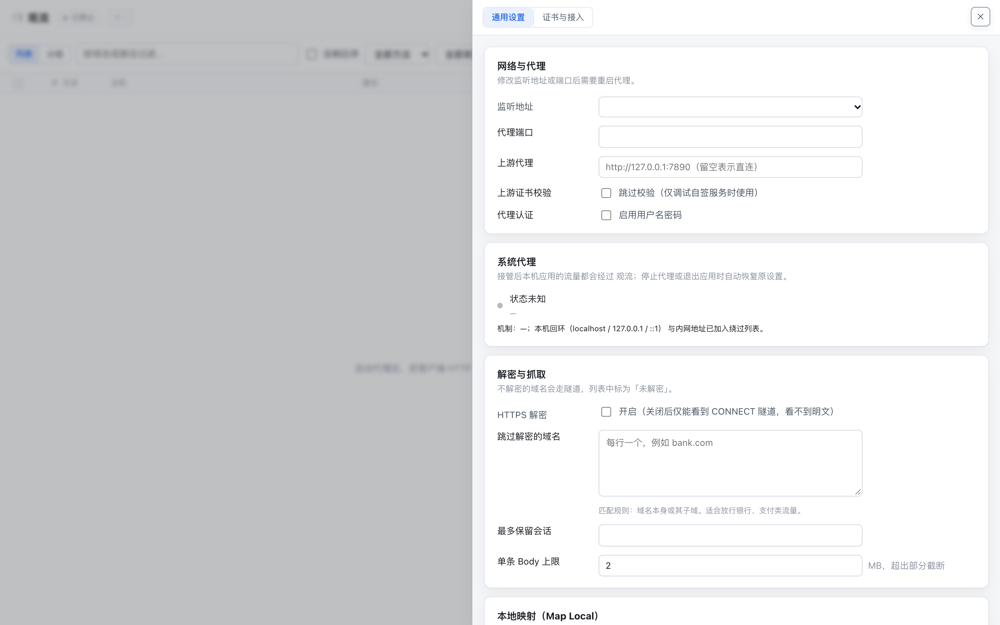

流量列表与筛选

设置抽屉 · 网络、证书、解密与映射

启动代理、安装证书、手机扫码，无需复杂配置即可解密 HTTPS。
自动过滤虚拟网卡地址，顶栏直接给出手机可用的代理地址；iOS 完全信任指引与验证入口。
请求重放、Map Local / Map Remote、断点改写、HAR / JSON 导出、响应体搜索。
暂停抓包时退化为纯隧道中转，不解密、不影响上网；一键恢复，无需重启。
中英双语默认中文；标准 / 舒展（大屏）/ 极简三种界面风格。
MIT 许可，根证书私钥仅存本地（0600），所有敏感操作需二次确认。
点击顶栏「启动代理」，默认监听 0.0.0.0:8888。
设置 → 证书 → 扫码打开下载页，按指引安装。
设置 → 通用 → 关于本机 → 证书信任设置 → 打开开关。
Wi-Fi 的 HTTP 代理填顶栏显示的局域网地址，浏览器访问 HTTPS 即可看到明文。